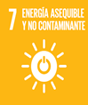
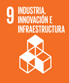
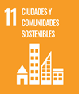
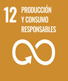

Incorporación de instalaciones energéticas previstas como electricidad y posibilidad de implementar energías renovables
Estructura en hormigón armado que garantiza estabilidad y durabilidad. Cumplimiento de normativas técnicas relevantes (NBE-CT-79 y NBE-CPI-96, entre otras).
Diseño entre medianeras que optimiza el uso del espacio urbano consolidado.Acceso a servicios básicos garantizados, como agua potable, energía eléctrica, y evacuación de aguas residuales.
Utilización de materiales constructivos optimizados para eficiencia. Sistema de gestión de residuos y tratamiento de aguas residuales.
